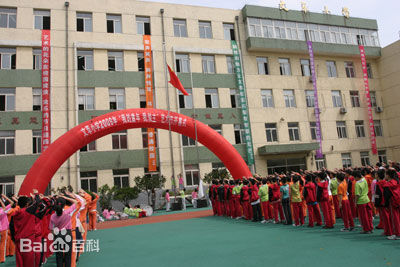
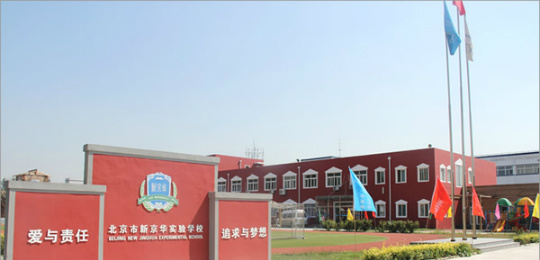

My resume
Education
My primary school is Wencui,located in Shenhe district,it is a public school which founded in 1989.

When was the time that I need to go to middle school,I didn't get enrolled to good middle school,
so my family and I decided to go to Beijing to continue my education.
I finish my middle school in Beijing Xinjinghua experimental school and now I'm a grade 11 student
of this school.

Past experience
The volunteer of Beijing science festival.
Being an hourly employee of a coffee bar for 64 hours.
The host of grade 11 student's graduation ceremony.
Present martial art in a public entertainment.
Skills
Language - Fluency in Chinese and English